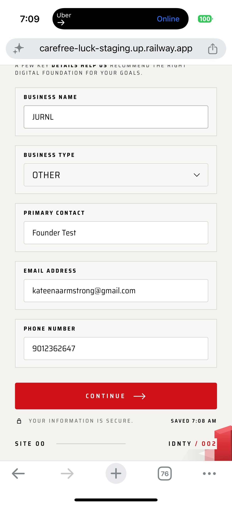

<!doctype html>
<html lang="en">
<head>
<meta charset="utf-8">
<title>Board 01A — Selector territories · iPhone</title>
<link rel="stylesheet" href="/src/site00/styles/site00-df-client.css">
<link rel="stylesheet" href="/src/site00/styles/site00-df-components.css">
<link rel="stylesheet" href="./board.css">
<link rel="stylesheet" href="./proposal.css">
</head>
<body>
<div id="board"></div>
<script type="module">
import { header, section, frame, device, stage, S, decisionBox, p02Page, selectField, territoryA, territoryC, sheet, field, BUSINESS_TYPES, mount } from './kit.js';

const T = BUSINESS_TYPES;
const OTHER = T[T.length - 1];

const current = frame({
  title: 'CURRENT · FC-004 · FOUNDER IPHONE',
  chips: S.impl('CLOSED — IMPLEMENTED') + ' ' + S.unres('OPEN — OS PICKER'),
  width: 300,
  body: ``,
  note: '<b>Closed</b> field fits the page. <b>Open</b> hands off to the iOS picker (SF type, frosted panel, system check) — the break the founder reported. CSS cannot restyle it; the control must be replaced (audit brief §3.6).',
});

const keep = frame({
  title: 'CLOSED STATE — KEPT IN ALL THREE',
  chips: S.impl() + ' ' + S.appr('+ OPTIONAL TAG · BOARD 07'),
  width: 340,
  body: stage(
    selectField({ value: '' }) +
      '<div style="height:14px"></div>' +
      selectField({ value: OTHER }) +
      '<div style="height:14px"></div>' +
      selectField({ value: '', focus: true, mark: true }) +
      '<div style="height:14px"></div>' +
      selectField({ value: '', invalid: true, error: 'CHOOSE A BUSINESS TYPE' }),
    { w: 340, touch: true },
  ),
  note: 'Empty · selected · keyboard focus (active frame + red period) · invalid. <b>Invalid is illustrative</b>: Business Type is optional today (validateBusinessInfo); the copy follows the existing “CHOOSE …” pattern (validateForRecommendation).',
});

// ── Territory A on iPhone ──
const aOpen = frame({
  title: 'A · ARCHITECTURAL DROPDOWN ON A PHONE',
  chips: S.rej('NOT THE MOBILE TREATMENT · FD-1'),
  rejected: 'ON PHONES: NOT APPROVED · A IS THE DESKTOP COMPANION (BOARD 01B)',
  body: device({
    scroll: 300,
    body: p02Page({ typeSlot: territoryA({ value: OTHER, active: 7, rows: 6.5, scrollAt: 3.5 }) }),
  }),
  note: 'Panel is part of the field: same edge, red active frame, no shadow, no gap. Half row signals scroll. Opens scrolled to the current value (DfSelect behaviour). Selected row carries the red period; the touched / arrow-key row is tinted.',
});
const aAbove = frame({
  title: 'A · 375 × 667 — FLIPS ABOVE',
  chips: S.impl('PLACEMENT LOGIC EXISTS') + ' ' + S.rej('NOT ON PHONES · FD-1'),
  rejected: 'ON PHONES: NOT APPROVED · KEPT AS EVIDENCE FOR FD-1',
  body: device({
    h: 667,
    w: 375,
    label: 'IPHONE SE SAFARI · 375 × 667',
    scroll: 520,
    body: p02Page({ typeSlot: territoryA({ value: '', active: 0, rows: 5.5, above: true }) }),
  }),
  note: 'DfSelect already measures visualViewport and flips above when space below is short (components.tsx place()). On a 667-px phone only 5½ rows fit — A is cramped on long lists.',
});

// ── Territory B ──
const bOpen = frame({
  title: 'B · EDITORIAL SELECTION SHEET',
  chips: S.appr('FD-1 · FOUNDER SELECTED · MOBILE'),
  body: device({
    scroll: 300,
    body: p02Page({ typeSlot: selectField({ value: OTHER, open: true, mark: true }) }),
    bottom: `<div class="ix-scrim"></div>${sheet({ value: OTHER, pressed: 3 })}`,
  }),
  note: 'Square sheet with the 2px red threshold edge (the pre-#1573 sheet language), index rail, display title, numbered rows (01–10 are presentation only, never stored). Selected = red period + red index + inset red edge. Close (44 px) and the scrim dismiss; choosing a row commits and closes, like the native control.',
});
const bSmall = frame({
  title: 'B · 375 × 667 — LIST SCROLLS INSIDE',
  chips: S.appr('FD-1'),
  body: device({
    w: 375,
    h: 667,
    label: 'IPHONE SE SAFARI · 375 × 667',
    scroll: 300,
    body: p02Page({ typeSlot: selectField({ value: T[1], open: true, mark: true }) }),
    bottom: `<div class="ix-scrim"></div>${sheet({ value: T[1], rows: 7.5 })}`,
  }),
  note: 'Header and footer stay put; only the option list scrolls (overscroll contained). At least 56 px of page stays visible above the sheet so the context is never lost.',
});

// ── Territory C ──
const cOpen = frame({
  title: 'C · INLINE EXPANDED SELECTION',
  chips: S.rej('NOT THE BUSINESS TYPE DEFAULT') + ' ' + S.alt('RESERVED · SHORT LISTS'),
  rejected: 'NOT APPROVED FOR BUSINESS TYPE · ONLY WHERE A SHORT LIST JUSTIFIES IT',
  body: device({
    scroll: 300,
    body: p02Page({ typeSlot: territoryC({ value: OTHER }) }),
  }),
  note: 'The field card grows in place, using the P03 domain-path tile grammar the founder already approved: the chosen tile takes the red frame and the red period. No box or dot on the others, so it never reads as a multi-select checkbox list. Ten options push PRIMARY CONTACT ≈ 450 px down — the cost of C on this field.',
});

const detail = frame({
  title: 'OPTION ROW STATES — LISTBOX (A) + SHEET (B)',
  chips: S.appr('FD-1'),
  width: 380,
  body: stage(
    `<div class="ix-dd"><div class="ix-dd__panel" style="position:relative;top:0;box-shadow:none;border-top:1px solid var(--df-red);border-radius:3px">
      <div class="ix-dd__scroll">
        <div class="ix-opt-row"><span class="ix-mark ix-mark--space"></span>${T[0]}</div>
        <div class="ix-opt-row ix-opt-row--active"><span class="ix-mark ix-mark--space"></span>${T[1]}<span class="ix-opt-row__tag">HOVER / ARROW KEY</span></div>
        <div class="ix-opt-row ix-opt-row--sel"><span class="ix-mark"></span>${T[2]}<span class="ix-opt-row__tag">SELECTED</span></div>
        <div class="ix-opt-row ix-opt-row--sel ix-opt-row--active"><span class="ix-mark"></span>${T[3]}<span class="ix-opt-row__tag">SELECTED + ACTIVE</span></div>
        <div class="ix-opt-row ix-opt-row--custom"><span class="ix-mark ix-mark--space"></span>MARINE SUPPLY<span class="ix-opt-row__tag">ON FILE · LEGACY VALUE</span></div>
      </div></div></div>
      <div style="height:16px"></div>
      <div class="ix-sheet" style="position:relative;border:1px solid var(--df-rule);border-top:2px solid var(--df-red)">
        <div class="ix-srow"><span class="ix-srow__n">01</span><span>${T[0]}</span><span></span></div>
        <div class="ix-srow ix-srow--pressed"><span class="ix-srow__n">02</span><span>${T[1]}<span class="ix-srow__tag">PRESSED (TOUCH DOWN)</span></span><span></span></div>
        <div class="ix-srow ix-srow--sel"><span class="ix-srow__n">03</span><span>${T[2]}<span class="ix-srow__tag">SELECTED</span></span><span class="ix-mark"></span></div>
        <div class="ix-srow ix-srow--focus"><span class="ix-srow__n">04</span><span>${T[3]}<span class="ix-srow__tag">KEYBOARD / SWITCH FOCUS</span></span><span></span></div>
        <div class="ix-srow ix-srow--custom"><span class="ix-srow__n">—</span><span>MARINE SUPPLY<span class="ix-srow__tag">ON FILE · NOT IN THE LIST</span></span><span></span></div>
      </div>`,
    { w: 380 },
  ),
  note: '“MARINE SUPPLY” stands in for any legacy free-text <code>industry</code> value outside BUSINESS_TYPES (today the <code>__custom</code> option). It is shown, selectable and kept untouched; it is never rewritten.',
});

const matrix = `<div class="bd-panel"><table class="bd-table">
<thead><tr><th>TERRITORY</th><th>MOBILE</th><th>DESKTOP</th><th>LONG LIST (10)</th><th>ACCESSIBILITY</th><th>BUILD COMPLEXITY</th><th>DATA-CONTRACT RISK</th><th>BEST FOR</th></tr></thead>
<tbody>
<tr><td>A · ARCHITECTURAL DROPDOWN</td><td>Works; cramped under 700 px tall; competes with the keyboard</td><td><span class="r">Strongest</span> — anchored, fast, pointer + keys</td><td>6½ rows then scroll</td><td>APG select-only combobox — <b>already built and tested</b> in DfSelect</td><td><span class="r">LOW</span> — restyle DfSelect, bind P02</td><td>LOW — value stays a BUSINESS_TYPES string</td><td><b>DESKTOP COMPANION · APPROVED (FD-1)</b><br>fine pointer · lists ≤ 10</td></tr>
<tr><td>B · EDITORIAL SHEET</td><td><span class="r">Strongest</span> — full-width rows, 48 px targets, no clipping</td><td>Possible as centred panel; heavier than needed</td><td>All 10 visible on 844; inner scroll on 667</td><td>Modal dialog containing a listbox; focus trap + return (useDfDialogFocus exists)</td><td>MEDIUM — new IdntySelectionSheet on DfBottomSheet’s focus / scroll-lock plumbing</td><td>LOW — same value contract; Clear restores ''</td><td><b>MOBILE · FOUNDER SELECTED (FD-1)</b><br>coarse pointer ≤ 600 px · long labels</td></tr>
<tr><td>C · INLINE EXPANSION</td><td>Calm, in-flow; long page jump for 10</td><td>Fine</td><td>Pushes the form ≈ 450 px</td><td>Disclosure button + radio group (native radios) — simplest semantics</td><td>LOW–MEDIUM</td><td>LOW</td><td><b>RESERVED</b> · not the Business Type default · ≤ 5 options in context (domain paths already use this grammar)</td></tr>
</tbody></table></div>`;

const decision = decisionBox(
  'FD-1',
  'APPROVED — OPTION B EDITORIAL MOBILE SELECTION SHEET · DESKTOP COMPANION A',
  '<b>Founder selection:</b> Board 01, Option B. One reusable IdntySelect: the selection sheet on coarse pointers up to 600 px wide, the anchored listbox (Territory A) otherwise. Both share the closed field, typography, red-period selection, the active frame and the feedback states. Built on DfSelect (A) and DfBottomSheet focus / scroll-lock plumbing (B). Territory C only where a specific short list justifies it; never the Business Type default. Sheet geometry follows FD-6.',
);

mount(`
${header({
  num: '01A',
  title: 'Selector territories · iPhone',
  sub: 'FC-004 Business Type with the ten real BUSINESS_TYPES values on the founder-tested P02 page. The founder selected Territory B, the editorial selection sheet, for mobile; the closed field stays exactly as it is. A remains the desktop companion (Board 01B); C is reserved for short lists. The A and C phone frames stay below as greyed history.',
})}
${section('00', 'THE PROBLEM AND WHAT STAYS', `<div class="bd-row">${current}${keep}</div>`)}
${section('01', 'OPEN STATE IN CONTEXT — B SELECTED · A AND C KEPT AS HISTORY', `<div class="bd-row">${bOpen}${aOpen}${cOpen}</div>`, S.appr('FD-1'))}
${section('02', 'SHORT PHONE, ROW STATES', `<div class="bd-row">${bSmall}${detail}${aAbove}</div>`, S.appr('FD-1'))}
${section('—', 'COMPARISON (HISTORICAL) AND FOUNDER DECISION', matrix + '<div style="height:18px"></div>' + decision)}
<div class="bd-foot"><span>BOARD 01A / 07 · SELECTOR TERRITORIES · IPHONE</span><span>VALUES: <b>BUSINESS_TYPES</b> (src/site00/foundation-client/model.ts, ratification U-1) · FD-1 APPROVED · TERRITORY B ON MOBILE</span></div>
`);
</script>
</body>
</html>
